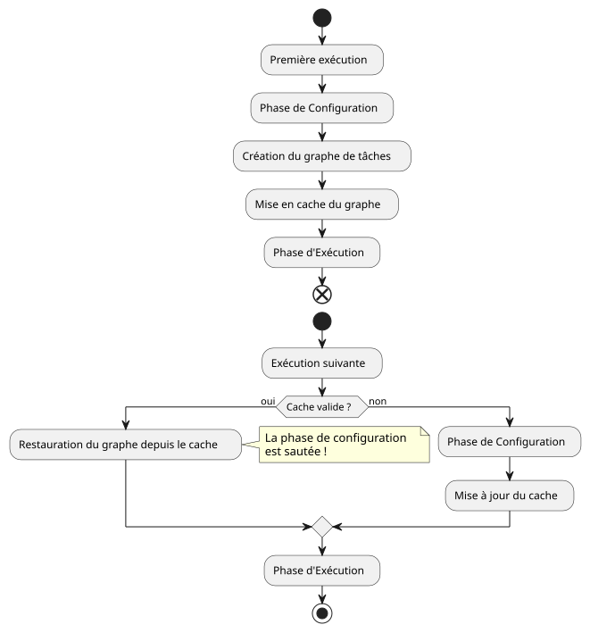

Artículo 4 : La Trampa del Caché de Configuración de Gradle
Publié le 26 September 2025
Introducción
En nuestra aventura de crear el plugin`site-baker`, seguimos un enfoque TDD riguroso. Cada funcionalidad estaba probada, validada, y avanzábamos con confianza. Y luego, un día, lo inesperado llegó. Las builds empezaron a comportarse de manera errática. Los cambios en la lógica del plugin o en los archivos de configuración parecían ser ignorados, y nuestras pruebas funcionales, antes fiables, fallaban sin razón aparente.
Este tipo de problema puede ser increíblemente frustrante. Pone en duda la fiabilidad de la herramienta y la validez de nuestro código. Tras una sesión intensa de depuración, el culpable ha sido identificado: elcaché de configuración de Gradle.
El síntoma : Construcciones fantasma
El problema se manifestaba de varias maneras:
-
Estaba modificando una cadena de caracteres en una tarea.
println, pero la antigua cadena seguía mostrándose en tiempo de ejecución. -
Estaba cambiando un valor en mi archivo`managed-jbake-context.yml`, pero el plugin actuaba como si el archivo no hubiera sido modificado.
-
Los tests funcionales, que crean proyectos de prueba al vuelo, fallaban porque el plugin no parecía detectar los archivos de configuración recién creados.
Todo ocurría como si Gradle ejecutara una "versión fantasma" de nuestra compilación, ignorando nuestros cambios más recientes.
La encuesta: ¿Qué es la caché de configuración?
El caché de configuración es una característica relativamente moderna y extremadamente potente de Gradle, activada por defecto en las nuevas versiones. Su objetivo es hacer que los builds sean más rápidos.
-
Durante la primera ejecución, Gradle ejecuta la fase deConfiguración(lectura de`build.gradle.kts`, creación de las tareas, resolución de dependencias) y construye un grafo de tareas.
-
Al final de esta fase, Gradleserializa este grafo de tareasy lo guarda en caché.
-
En las ejecuciones siguientes, si nada ha cambiado (scripts de compilación,
gradle.properties, etc.), Gradleomite completamente la fase de configuracióny reutiliza el grafo de tareas almacenado en caché
El ahorro de tiempo es espectacular en los proyectos grandes. Sin embargo, este rendimiento tiene un precio: impone reglas estrictas sobre cómo deben escribirse los plugins.

La causa del problema: un plugin no conforme
Nuestro plugin`site-baker`violait, sin saberlo, varias reglas de la caché de configuración. Para que un grafo de tareas sea serializable, las tareas no deben contener referencias a objetos complejos como el objeto`Project`o leer archivos de manera arbitraria durante la fase de ejecución.
Nuestro error principal era leer el contenido del archivo YAML directamente dentro de la lógica de ejecución de la tarea, utilizando una referencia al camino almacenado en nuestra extensión. Este enfoque es incompatible con el caché porque Gradle no puede saber si el contenido del archivo ha cambiado si esta lectura no se modela como unaentrada de tarea( tarea entrada ).
La solución temporal: Desactivar la caché
Para desbloquearnos y recuperar un comportamiento de compilación predecible, la solución más rápida fue desactivar la caché de configuración. Basta con agregar la siguiente línea en el archivo`gradle.properties`del proyecto que utiliza el plugin (o en nuestro caso, el proyecto de prueba`site-baker`) .
# site-baker/gradle.properties
org.gradle.configuration-cache=falseInstantáneamente, los builds recuperaron su comportamiento normal. Cada ejecución reiniciaba la fase de configuración y nuestros cambios fueron tenidos en cuenta.
Sin embargo, es una solución de contorno, no una solución duradera. Sacrifica el rendimiento y no resuelve el problema de fondo de nuestro plugin.
La verdadera solución: hacer el plugin compatible
Para que un plugin sea un buen ciudadano del ecosistema Gradle moderno, debe ser compatible con el caché de configuración. Esto implica repensar la forma en que los datos fluyen hacia nuestras tareas.
La clave es utilizar losAPIs del proveedorde Gradle. En lugar de pasar valores directos (como un`String` ou un File) a nuestras tareas, nosotros debemos pasar algunos`Property<T>`o de`Provider<T>`.
-
Declarar las entradas de tareas :La tarea que analiza el archivo YAML debe declarar este archivo como una entrada. Se utiliza para ello la anotación`@InputFile`.
[source,kotlin] (No output, as there is no French text provided to translate) @get:InputFile abstracto val configFile: RegularFileProperty </think>